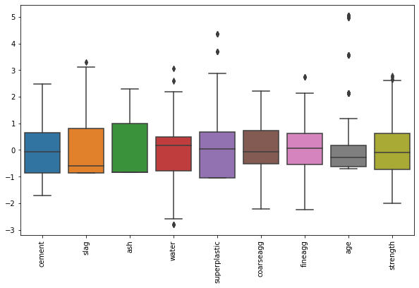
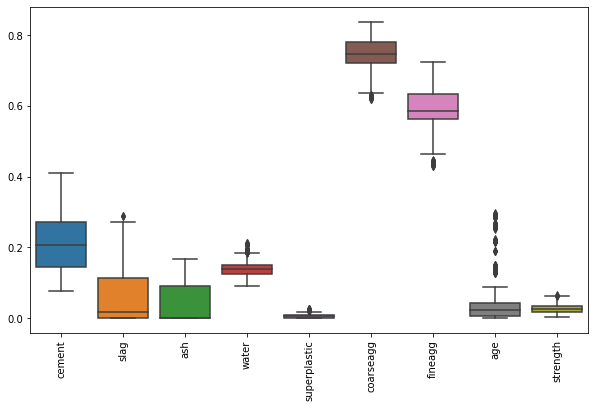
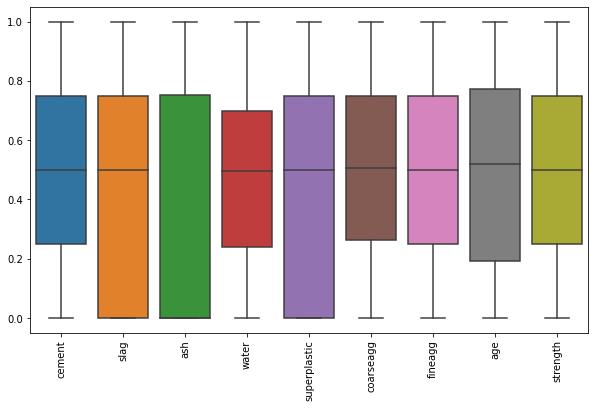

Análisis 2D — Normalización de datos¶
60:00 min | Última modificación: Agosto 11, 2021 | YouTube
[1]:
import matplotlib.pyplot as plt
import numpy as np
import pandas as pd
import seaborn as sns
Escalado lineal¶
[2]:
raw_df = pd.read_csv(
"https://raw.githubusercontent.com/jdvelasq/datalabs/master/datasets/concrete.csv",
)
raw_df.head()
[2]:
| cement | slag | ash | water | superplastic | coarseagg | fineagg | age | strength | |
|---|---|---|---|---|---|---|---|---|---|
| 0 | 540.0 | 0.0 | 0.0 | 162.0 | 2.5 | 1040.0 | 676.0 | 28 | 79.99 |
| 1 | 540.0 | 0.0 | 0.0 | 162.0 | 2.5 | 1055.0 | 676.0 | 28 | 61.89 |
| 2 | 332.5 | 142.5 | 0.0 | 228.0 | 0.0 | 932.0 | 594.0 | 270 | 40.27 |
| 3 | 332.5 | 142.5 | 0.0 | 228.0 | 0.0 | 932.0 | 594.0 | 365 | 41.05 |
| 4 | 198.6 | 132.4 | 0.0 | 192.0 | 0.0 | 978.4 | 825.5 | 360 | 44.30 |
[3]:
plt.figure(figsize=(10, 6))
sns.boxplot(data=raw_df)
plt.xticks(rotation=90)
plt.show()

En el escalado lineal se lleva cada columna al rango 0-1 con:
\[x_{*} = \frac{x-\min(x)}{\max(x) - \min(x)}\]
[4]:
#
# Manual
#
(raw_df.cement - raw_df.cement.min()) / (raw_df.cement.max() - raw_df.cement.min())
[4]:
0 1.000000
1 1.000000
2 0.526256
3 0.526256
4 0.220548
...
1025 0.398174
1026 0.502740
1027 0.106164
1028 0.130365
1029 0.362785
Name: cement, Length: 1030, dtype: float64
[5]:
#
# Con sklearn
#
from sklearn.preprocessing import MinMaxScaler
#
# Se escalan todas las variables al rango [0, 1]
# para evitar problemas asociados a la escala
#
scaler = MinMaxScaler()
scaled_df = pd.DataFrame(
scaler.fit_transform(raw_df),
columns=raw_df.columns,
)
scaled_df.head()
[5]:
| cement | slag | ash | water | superplastic | coarseagg | fineagg | age | strength | |
|---|---|---|---|---|---|---|---|---|---|
| 0 | 1.000000 | 0.000000 | 0.0 | 0.321086 | 0.07764 | 0.694767 | 0.205720 | 0.074176 | 0.967485 |
| 1 | 1.000000 | 0.000000 | 0.0 | 0.321086 | 0.07764 | 0.738372 | 0.205720 | 0.074176 | 0.741996 |
| 2 | 0.526256 | 0.396494 | 0.0 | 0.848243 | 0.00000 | 0.380814 | 0.000000 | 0.739011 | 0.472655 |
| 3 | 0.526256 | 0.396494 | 0.0 | 0.848243 | 0.00000 | 0.380814 | 0.000000 | 1.000000 | 0.482372 |
| 4 | 0.220548 | 0.368392 | 0.0 | 0.560703 | 0.00000 | 0.515698 | 0.580783 | 0.986264 | 0.522860 |
[6]:
plt.figure(figsize=(10, 6))
sns.boxplot(data=scaled_df)
plt.xticks(rotation=90)
plt.show()

Estandarización¶
Se aplica la transformación:
\[x_{*} = \frac{x - \text{mean}(x)}{\text{std}(x)}\]
[7]:
from sklearn.preprocessing import StandardScaler
scaler = StandardScaler()
scaled_df = pd.DataFrame(
scaler.fit_transform(raw_df),
columns=raw_df.columns,
)
scaled_df.head()
[7]:
| cement | slag | ash | water | superplastic | coarseagg | fineagg | age | strength | |
|---|---|---|---|---|---|---|---|---|---|
| 0 | 2.477915 | -0.856888 | -0.847144 | -0.916764 | -0.620448 | 0.863154 | -1.217670 | -0.279733 | 2.645408 |
| 1 | 2.477915 | -0.856888 | -0.847144 | -0.916764 | -0.620448 | 1.056164 | -1.217670 | -0.279733 | 1.561421 |
| 2 | 0.491425 | 0.795526 | -0.847144 | 2.175461 | -1.039143 | -0.526517 | -2.240917 | 3.553066 | 0.266627 |
| 3 | 0.491425 | 0.795526 | -0.847144 | 2.175461 | -1.039143 | -0.526517 | -2.240917 | 5.057677 | 0.313340 |
| 4 | -0.790459 | 0.678408 | -0.847144 | 0.488793 | -1.039143 | 0.070527 | 0.647884 | 4.978487 | 0.507979 |
[8]:
plt.figure(figsize=(10, 6))
sns.boxplot(data=scaled_df)
plt.xticks(rotation=90)
plt.show()

[9]:
#
# Media de cada una de las características
#
scaler.mean_
[9]:
array([281.16786408, 73.89582524, 54.18834951, 181.56728155,
6.20466019, 972.91893204, 773.58048544, 45.66213592,
35.81796117])
[10]:
#
# Desviación estándard de cada una de las características
#
scaler.scale_
[10]:
array([104.45562093, 86.2374484 , 63.9659301 , 21.34384992,
5.97094077, 77.71620016, 80.13705031, 63.13923913,
16.69763041])
maxabs_scale¶
[11]:
#
# Transforma cada columna al intervalo [-1, 1].
# El maximo valor absoluto de cada columna
# será igual a 1.0
#
from sklearn.preprocessing import maxabs_scale
maxabs_scaled_df = pd.DataFrame(
maxabs_scale(scaled_df),
columns=raw_df.columns,
)
maxabs_scaled_df.head()
[11]:
| cement | slag | ash | water | superplastic | coarseagg | fineagg | age | strength | |
|---|---|---|---|---|---|---|---|---|---|
| 0 | 1.000000 | -0.258826 | -0.371378 | -0.299044 | -0.142512 | 0.389822 | -0.445533 | -0.055309 | 0.944209 |
| 1 | 1.000000 | -0.258826 | -0.371378 | -0.299044 | -0.142512 | 0.476991 | -0.445533 | -0.055309 | 0.557309 |
| 2 | 0.198322 | 0.240291 | -0.371378 | 0.709625 | -0.238684 | -0.237789 | -0.819929 | 0.702509 | 0.095166 |
| 3 | 0.198322 | 0.240291 | -0.371378 | 0.709625 | -0.238684 | -0.237789 | -0.819929 | 1.000000 | 0.111839 |
| 4 | -0.319002 | 0.204915 | -0.371378 | 0.159442 | -0.238684 | 0.031852 | 0.237054 | 0.984343 | 0.181310 |
[12]:
plt.figure(figsize=(10, 6))
sns.boxplot(data=maxabs_scaled_df)
plt.xticks(rotation=90)
plt.show()

Normalización¶
[13]:
#
# Normaliza cada muestra individualmente para que
# su norma sea unitaria. La norma puede ser: 'l2',
# 'l1', 'max'.
#
from sklearn.preprocessing import Normalizer
normalized_df = pd.DataFrame(
Normalizer().fit_transform(raw_df),
columns=raw_df.columns,
)
normalized_df.head()
[13]:
| cement | slag | ash | water | superplastic | coarseagg | fineagg | age | strength | |
|---|---|---|---|---|---|---|---|---|---|
| 0 | 0.395564 | 0.000000 | 0.0 | 0.118669 | 0.001831 | 0.761826 | 0.495187 | 0.020511 | 0.058595 |
| 1 | 0.392536 | 0.000000 | 0.0 | 0.117761 | 0.001817 | 0.766900 | 0.491397 | 0.020354 | 0.044989 |
| 2 | 0.273422 | 0.117181 | 0.0 | 0.187489 | 0.000000 | 0.766403 | 0.488458 | 0.222027 | 0.033115 |
| 3 | 0.268004 | 0.114859 | 0.0 | 0.183774 | 0.000000 | 0.751218 | 0.478781 | 0.294200 | 0.033087 |
| 4 | 0.145460 | 0.096973 | 0.0 | 0.140626 | 0.000000 | 0.716605 | 0.604618 | 0.263673 | 0.032446 |
[14]:
plt.figure(figsize=(10, 6))
sns.boxplot(data=normalized_df)
plt.xticks(rotation=90)
plt.show()

QuantileTransformer¶
[15]:
#
# Realiza una transformación no lineal que mapea
# los datos a una distribucion uniforme en el
# rango 0-1
#
from sklearn.preprocessing import QuantileTransformer
quantile_df = pd.DataFrame(
QuantileTransformer().fit_transform(raw_df),
columns=raw_df.columns,
)
quantile_df.head()
[15]:
| cement | slag | ash | water | superplastic | coarseagg | fineagg | age | strength | |
|---|---|---|---|---|---|---|---|---|---|
| 0 | 1.000000 | 0.000000 | 0.0 | 0.206707 | 0.375375 | 0.760761 | 0.132132 | 0.521021 | 0.997209 |
| 1 | 1.000000 | 0.000000 | 0.0 | 0.206707 | 0.375375 | 0.826326 | 0.132132 | 0.521021 | 0.923226 |
| 2 | 0.701201 | 0.744745 | 0.0 | 0.970470 | 0.000000 | 0.264264 | 0.000000 | 0.974474 | 0.638555 |
| 3 | 0.701201 | 0.744745 | 0.0 | 0.970470 | 0.000000 | 0.264264 | 0.000000 | 1.000000 | 0.657658 |
| 4 | 0.264765 | 0.716717 | 0.0 | 0.697197 | 0.000000 | 0.576577 | 0.760761 | 0.983984 | 0.724725 |
[16]:
plt.figure(figsize=(10, 6))
sns.boxplot(data=quantile_df)
plt.xticks(rotation=90)
plt.show()

PowerTransformer¶
[17]:
#
# Realizar una transformación no lineal para
# hacer que la distribución de cada columna sea
# más similar a una distribución normal
#
from sklearn.preprocessing import PowerTransformer
scaler = MinMaxScaler()
scaled_df = pd.DataFrame(
scaler.fit_transform(raw_df),
columns=raw_df.columns,
)
power_df = pd.DataFrame(
PowerTransformer(
method="box-cox",
standardize=False,
).fit_transform(scaled_df.values * 0.9 + 0.1),
columns=raw_df.columns,
)
power_df.head()
[17]:
| cement | slag | ash | water | superplastic | coarseagg | fineagg | age | strength | |
|---|---|---|---|---|---|---|---|---|---|
| 0 | 0.000000 | -3.738452 | -3.892746 | -0.627850 | -1.574444 | -0.277372 | -0.665464 | -5.370476 | -0.029484 |
| 1 | 0.000000 | -3.738452 | -3.892746 | -0.627850 | -1.574444 | -0.237389 | -0.665464 | -5.370476 | -0.247706 |
| 2 | -0.508603 | -0.916914 | -3.892746 | -0.137246 | -1.975720 | -0.569918 | -0.810312 | -0.309694 | -0.551296 |
| 3 | -0.508603 | -0.916914 | -3.892746 | -0.137246 | -1.975720 | -0.569918 | -0.810312 | 0.000000 | -0.539236 |
| 4 | -1.000318 | -0.995194 | -3.892746 | -0.401606 | -1.975720 | -0.443108 | -0.365545 | -0.012522 | -0.490031 |
[18]:
plt.figure(figsize=(10, 6))
sns.boxplot(data=power_df)
plt.xticks(rotation=90)
plt.show()

KBinsDiscretizer¶
[19]:
X = np.array(
[
[0.0, 4.0, 12],
[1.0, 5.0, 15],
[2.0, 6.0, 14],
[3.0, 3.0, 11],
[4.0, 7.0, 11],
[5.0, 3.0, 13],
[6.0, 7.0, 11],
[7.0, 6.0, 14],
[8.0, 3.0, 18],
[9.0, 2.0, 13],
[10.0, 1.0, 14],
]
)
X
[19]:
array([[ 0., 4., 12.],
[ 1., 5., 15.],
[ 2., 6., 14.],
[ 3., 3., 11.],
[ 4., 7., 11.],
[ 5., 3., 13.],
[ 6., 7., 11.],
[ 7., 6., 14.],
[ 8., 3., 18.],
[ 9., 2., 13.],
[10., 1., 14.]])
[20]:
from sklearn.preprocessing import KBinsDiscretizer
KBinsDiscretizer(
n_bins=[3, 2, 2],
encode="ordinal",
).fit_transform(X)
[20]:
array([[0., 1., 0.],
[0., 1., 1.],
[0., 1., 1.],
[0., 0., 0.],
[1., 1., 0.],
[1., 0., 1.],
[1., 1., 0.],
[2., 1., 1.],
[2., 0., 1.],
[2., 0., 1.],
[2., 0., 1.]])
Binarizer¶
[21]:
X = [
[1.0, -1.0, 2.0],
[2.0, 0.0, 0.0],
[0.0, 1.0, -1.0],
]
X
[21]:
[[1.0, -1.0, 2.0], [2.0, 0.0, 0.0], [0.0, 1.0, -1.0]]
[22]:
from sklearn.preprocessing import Binarizer
Binarizer(threshold=0.5).fit_transform(X)
[22]:
array([[1., 0., 1.],
[1., 0., 0.],
[0., 1., 0.]])
LabelEncoder¶
[23]:
df = pd.DataFrame(
[
["paris"],
["paris"],
["tokyo"],
["amsterdam"],
],
columns=["city"],
)
df
[23]:
| city | |
|---|---|
| 0 | paris |
| 1 | paris |
| 2 | tokyo |
| 3 | amsterdam |
[24]:
from sklearn.preprocessing import LabelEncoder
encoded_df = df.copy()
encoded_df['city'] = LabelEncoder().fit_transform(df.city)
encoded_df.head()
[24]:
| city | |
|---|---|
| 0 | 1 |
| 1 | 1 |
| 2 | 2 |
| 3 | 0 |
OneHotEncoder¶
[25]:
X = [
["male", "from US", "uses Safari"],
["female", "from Europe", "uses Firefox"],
]
df = pd.DataFrame(X, columns=['sex', 'from', 'uses'])
df
[25]:
| sex | from | uses | |
|---|---|---|---|
| 0 | male | from US | uses Safari |
| 1 | female | from Europe | uses Firefox |
[26]:
pd.get_dummies(df)
[26]:
| sex_female | sex_male | from_from Europe | from_from US | uses_uses Firefox | uses_uses Safari | |
|---|---|---|---|---|---|---|
| 0 | 0 | 1 | 0 | 1 | 0 | 1 |
| 1 | 1 | 0 | 1 | 0 | 1 | 0 |
[27]:
#
# Con sklearn
#
from sklearn.preprocessing import OneHotEncoder
OneHotEncoder().fit_transform(df.values).toarray()
[27]:
array([[0., 1., 0., 1., 0., 1.],
[1., 0., 1., 0., 1., 0.]])